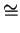

![\includegraphics[width=0.9\textwidth]{perov.ps}](img58.png) |
The name ``manganites'' was first given by Jonker and Van Santen in 1950 [73], whose work is the first on the family of manganites. The starting material was LaMnO3 which crystallizes in the cubic structure of the mineral perovskite3.1CaTiO3. The perovskite structure for a generic compound ABO3 is shown in Fig. 3.1. The important structural motif is the corner shared BO6 octahedron, i.e., MnO6 in the manganites.
|
|
The origin of the ferromagnetic phase was first attributed to a
positive indirect-exchange interaction. This view was soon replaced by
the so called ``double exchange'' mechanism proposed by Zener in 1951,
which still remains at the core of our understanding of these magnetic
oxides. In a series of seminal
papers [75,76,77], Zener ``interpreted
the ferro-magnetism as arising from the indirect coupling between
incomplete d-shells via the conducting electrons''. A quantitative
relationship between electrical conductivity  and the Curie
temperature (Tc) was also developed:
and the Curie
temperature (Tc) was also developed:

 /2), where
/2), where  is the classical angle
between the core spins of neighboring Mn ions.
is the classical angle
between the core spins of neighboring Mn ions.
In 1955, the structure of magnetic ordering over the entire composition range of La1-xCaxMnO3 was discovered in a remarkable early neutron diffraction studies by Wollan and Koehler [79] from Oak Ridge National Laboratory. The early magnetic phase diagram obtained by the neutron scattering technique closely matches the modern version coming 50 years later [80]. As a function of Ca doping, many interesting ferromagnetic and anti ferromagnetic phases were found. It is worth noting that evidence of charge ordering was also reported in the anti ferromagnetic phases. Lattice distortion was also studied with X-ray diffraction measurements in these early experiments.
Following the paper by Wollan and Koehler, Goodenough presented a theory of semi-covalent exchange [81], and successfully explained the observed rich magnetic and structural phase diagram. Kanamori revisited this problem, and compiled the still widely used Goodenough-Kanamori rules [82,83]. More details will be discussed later.
In the following years, not much attention was given to manganites. Only to mention a few, Morrish et al. in 1969 [84] found a way to grow high quality millimeter long single crystal manganites with composition (La,Pb)MnO3. The results of previous studies on polycrystalline materials were confirmed. Searle and Wang [85,86] proposed a phenomenological model based on a strongly spin-polarized conduction band to explain the ferromagnetism. Nonetheless, the family of manganites enjoyed a greatly renewed interest since the discovery of the colossal magneto-resistive (CMR) effects.